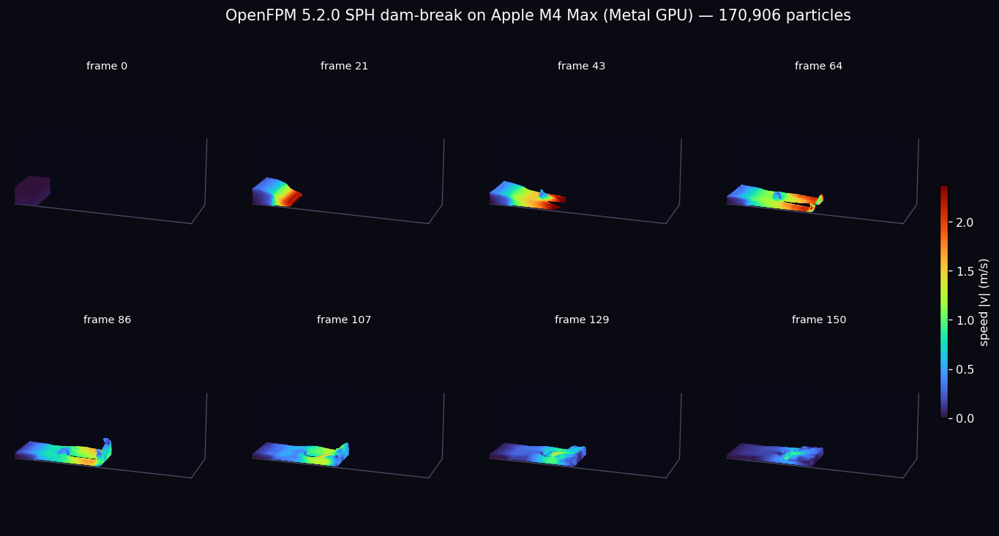
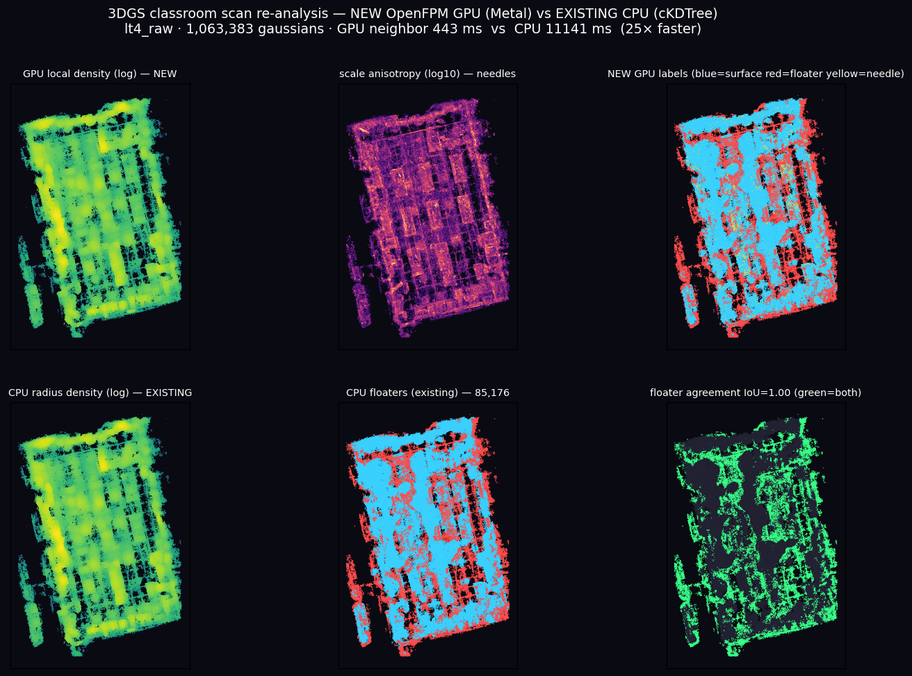
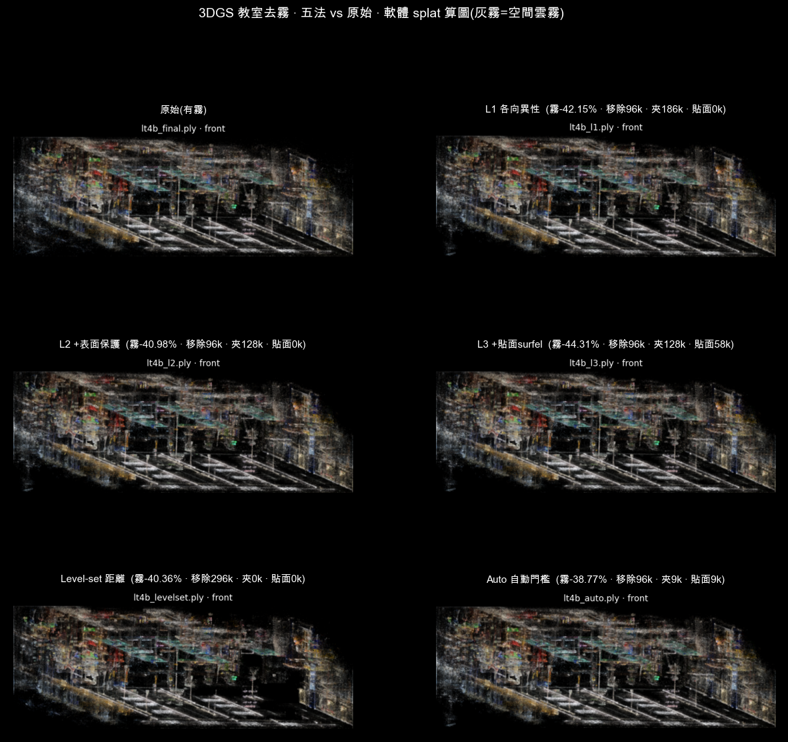
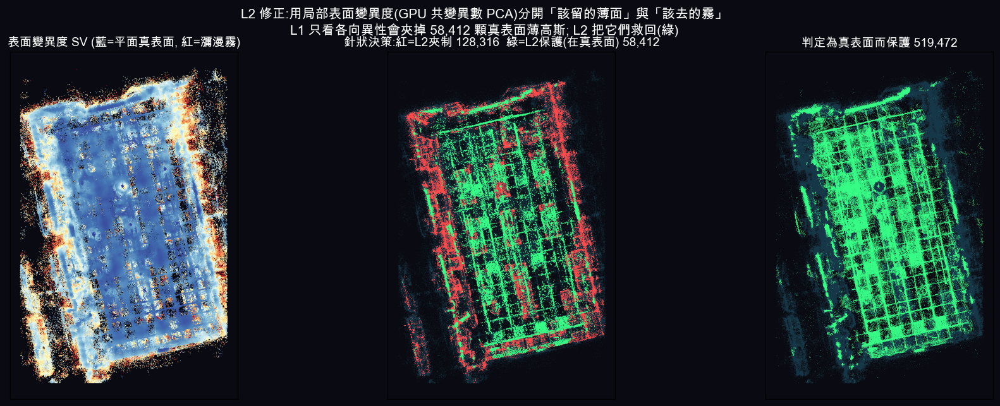
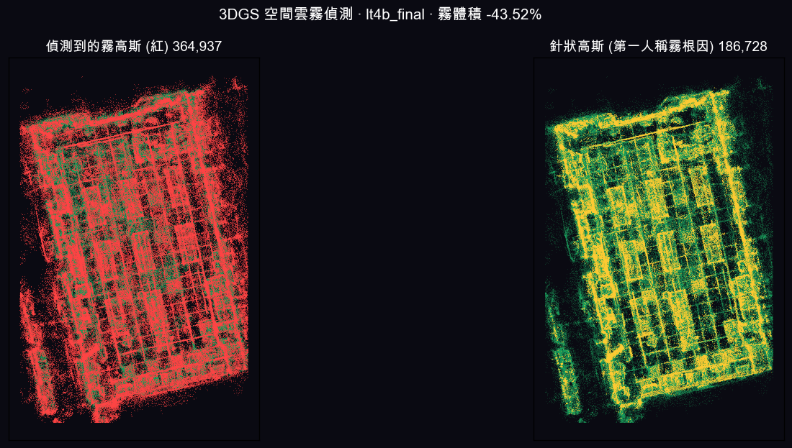
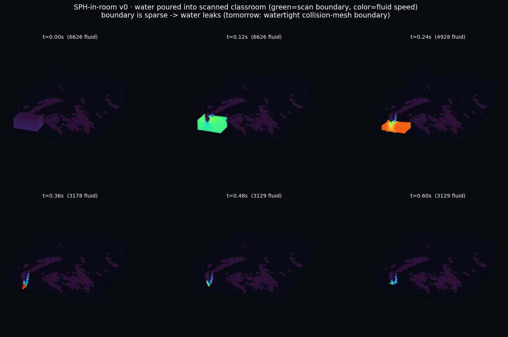

3DGS 的每一顆高斯本質上就是帶屬性的 3D 粒子，剛好對上 OpenFPM 的核心——GPU 上的粒子鄰域搜尋（cell-list）。 這條線把「掃描出來的空間」餵進「新的 3D 運算分析方式」，做三件事：(1) 用 GPU 快速算每顆高斯的鄰域密度並與現行 CPU 管線逐點驗證； (2) 用局部表面變異度分開「該留的薄面」與「該去的雲霧」，實作五種去霧法比較成效；(3) 把清理後的空間當邊界，在真實教室裡跑 SPH 流體。
① 底層：OpenFPM Metal GPU 建置驗證
📖 技術說明 — 為什麼是 OpenFPM / Metal，怎麼跑起來的
OpenFPM 5.2.0（2026-07）首度加入 Apple Metal GPU 後端：CUDA 風格 kernel 經 HIP 前端→clspv→SPIR-V→MoltenVK→Metal，原始碼一行不改就能在 Apple Silicon GPU 上跑。本站從源碼在 M4 Max 上編譯跑通（踩過 Boost/HDF5/CMake 等相依坑），並以經典 SPH 壩潰驗證：17 萬顆粒子、完整 1.5 秒模擬，全在 Metal GPU（AGXMetalG16X 驅動確認載入）。

② 粒子鄰域分析：GPU vs 現行 CPU 管線
把 3DGS 掃描載入 OpenFPM 的 vector_dist_gpu，在 Metal 上建 cell-list、算每顆高斯的局部鄰域密度； 再用現行管線的 scipy cKDTree 在 CPU 算同一個量——既驗證新方法正確，又比較速度。

| 教室 / 階段 | 高斯數 | GPU 加速 | 密度相關 | floater IoU | 針狀高斯 |
|---|---|---|---|---|---|
| 生科・原始 | 1,063,383 | 25.1× | 1.0000 | 1.00 | 71,616 |
| 生科・完整 | 1,920,449 | 6.8× | 1.0000 | 1.00 | 195,356 |
| 生科・已清理 | 329,051 | 10.1× | 1.0000 | 1.00 | 77,692 |
| 家政・完整 | 1,484,392 | 4.1× | 1.0000 | 1.00 | 260,248 |
| 家政・去噪 | 761,646 | 10.1× | 1.0000 | 1.00 | 86,088 |
③ 空間雲霧修正：五種方法 × 成效比較
3DGS 的「第一人稱霧」＝三類病態高斯：孤立 floater（低鄰域密度）、針狀高斯（高各向異性，霧的根因）、瀰漫高斯（低不透明度）。 用上面 GPU 算的密度 + 局部表面變異度（鄰居共變異數 PCA），實作並比較五種修正法：

| 方法 | 做法 | 霧體積↓ | 移除 | 夾制 | 貼面surfel |
|---|---|---|---|---|---|
| L1 各向異性 | 純形狀夾針 + 移除 floater | −42.2% | 96k | 187k | 0 |
| L2 +表面保護 | 不夾在真表面上的薄高斯 | −41.0% | 96k | 128k | 0 |
| L3 +貼面 surfel | 把薄面高斯沿法向壓成貼面圓盤 | −44.3% | 96k | 128k | 58k |
| Level-set 距離 | 離任何真表面太遠即霧，幾何移除 | −40.4% | 296k | 0 | 0 |
| Auto 自動門檻 | 門檻由資料分布自動決定（保守） | −38.8% | 96k | 9k | 9k |
成效分析（視覺評估）
對照上圖，依「去霧程度」與「結構保留」綜合評比：
- 1L3（貼面 surfel）— 最佳平衡。邊/頂灰霧明顯變乾淨，且把 5.8 萬顆「薄但貼牆/桌」的高斯就地壓成對齊表面的圓盤，桌列與結構比 L1/L2 更銳利、無破洞。霧體積降幅也最大（−44.3%）。
- 2L2（表面保護）— 穩健。去霧與 L1 相當，但保護真表面薄高斯不被誤夾，邊緣結構比 L1 完整。
- 3Level-set（距離）— 去霧俐落但較兇。幾何移除離表面遠的高斯，空間霧掃得乾淨，但一次刪 29.6 萬顆，部分區域偏稀疏、有留洞風險。
- 4L1（各向異性）— 有效但會誤傷。夾掉最多針狀（18.7 萬），去霧有感，但也夾到牆/桌面上的薄高斯，細節略損。
- 5Auto（自動門檻）— 太保守。只動 1.8 萬顆，殘留霧最多，最接近原始；適合當「不敢刪」的安全基準，門檻仍需視場景放寬。
④ 為何 L2/L3 更準：局部表面變異度
📖 技術說明 — 表面變異度（Pauly）與 GPU 共變異數
做法：在 GPU 鄰域迴圈裡順便累加每顆高斯的鄰居共變異數，host 端用 eigvalsh 求 PCA 特徵值 λ₀≤λ₁≤λ₂，取表面變異度 SV = λ₀/(λ₀+λ₁+λ₂)（Pauly 2002）。低 SV＝鄰居共面（真表面，即使高斯很薄也該留）；高 SV＝瀰漫團塊（霧）。這解決了「薄≠病，不貼面才是病」——單看形狀（各向異性）會把貼在牆上的薄高斯誤當針狀霧。


⑤ 延伸：把水灌進真實教室（SPH × 3DGS）
同一套 OpenFPM，把去霧後的掃描表面當邊界，在真實教室幾何裡跑 SPH 流體——現行管線做不到的能力，對應物理教育情境。

deneedle 同性質，但更快（Metal）、多訊號、且對 CPU 逐點驗證。視覺最終驗收請把去霧版載進 splat viewer 走第一人稱。